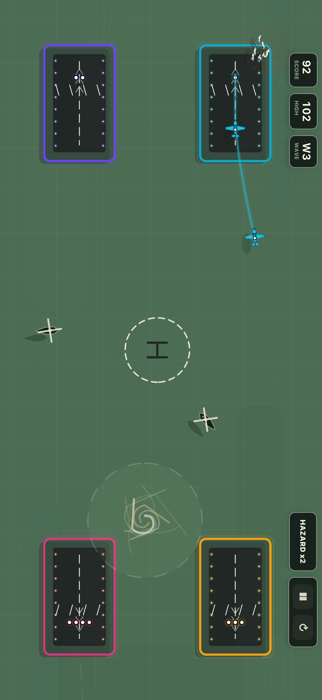

No ads
Your run ends because the skies got too chaotic, not because a video ad interrupted the next attempt.
No ads arcade
Gridlock: Terminal is built for clean, repeatable iPhone runs. No ad breaks, no in-app purchase gates, no account setup before the first route.

Clean mobile play
Your run ends because the skies got too chaotic, not because a video ad interrupted the next attempt.
The game does not sell extra aircraft, retries, currencies, or boosters. The pressure comes from play.
The core routing loop is built for quick play. Game Center features sync when Apple's services are available.
Learn a cleaner route, beat your last score, and get back into the tower without a long setup screen.
More Gridlock guides